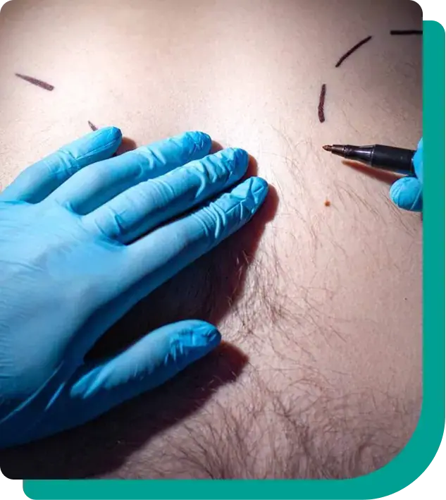
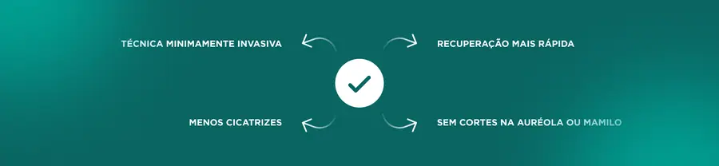
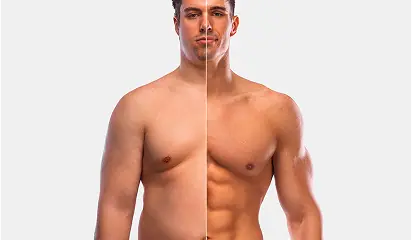
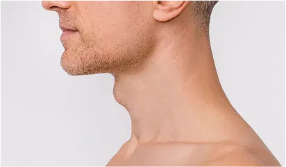

Paleta de cores
Medida no navegador: fundos ponderados pela área ocupada, textos pela quantidade de caracteres. Destaques reúnem cores saturadas e fundos de botão.
Fundos
rgb(243, 243, 243)
rgb(255, 255, 255)
rgb(0, 159, 146)
rgb(7, 60, 63)
rgb(0, 122, 112)
rgb(34, 197, 94)
rgb(229, 231, 235)
Textos
rgb(35, 31, 32)
rgb(255, 255, 255)
rgb(108, 117, 125)
rgb(31, 41, 55)
rgb(75, 85, 99)
rgb(17, 24, 39)
Destaques
rgb(255, 255, 255)
rgb(0, 159, 146)
rgb(34, 197, 94)
rgb(31, 41, 55)
rgb(9, 101, 98)
rgb(7, 60, 63)
Gradientes
linear-gradient(to right, rgb(0, 122, 112) 10%, rgb(35, 31, 32) 90%)linear-gradient(to right, rgb(0, 159, 146), rgb(0, 122, 112))Tipografia
Escala usada (desktop 1440px)
| Tamanho | Peso | Família | Amostra |
|---|---|---|---|
| 48px | 700 | Montserrat | Texto de exemplo |
| 36px | 600 | Montserrat | Texto de exemplo |
| 36px | 700 | Montserrat | Texto de exemplo |
| 24px | 700 | Inter | Texto de exemplo |
| 20px | 700 | Montserrat | Texto de exemplo |
| 20px | 600 | Inter | Texto de exemplo |
| 18px | 400 | Inter | Texto de exemplo |
| 18px | 600 | Inter | Texto de exemplo |
| 18px | 500 | Inter | Texto de exemplo |
| 16px | 400 | Inter | Texto de exemplo |
Mobile (390px): 30px/700, 24px/700, 24px/600, 20px/700, 20px/600, 18px/700, 18px/400, 18px/600 · H1 no mobile: 30px
Tags
| Tag | Família | Tamanho | Peso | Altura de linha | Espaçamento | Caixa | Cor |
|---|---|---|---|---|---|---|---|
| <h1> | Montserrat | 48px | 700 | 48px | normal | none | #111827 |
| <h2> | Montserrat | 36px | 600 | 40px | normal | none | #111827 |
| <h3> | Inter | 18px | 400 | 28px | normal | none | #096562 |
| <p> | Inter | 16px | 300 | 26px | normal | none | #231F20 |
Botões
Recriados com os estilos computados reais. Efeitos de hover e animação não aparecem aqui; veja a seção de animações.
fundo #00000000 · texto #171717 · raio 0px · padding 0px 0px · 16px/400 none · 8x na páginafundo #00000000 · texto #171717 · raio 12px 12px 0px 0px · padding 20px 24px · 16px/400 none · 7x na páginafundo #FFFFFF · texto #171717 · raio 9999px · padding 8px 8px · 16px/400 none · 2x na páginafundo #00000000 · texto #FFFFFF · raio 9999px · padding 8px 24px · 16px/600 none · 1x na páginafundo #009F92 · texto #FFFFFF · raio 8px · padding 12px 32px · 18px/600 none · 1x na páginaCards e containers
AGENDAR AVALIAÇÃO Ginecomastia Corrija a ginecomastia e conquiste a confiança no seu conto
raio 12px · sombra rgba(74, 155, 142, 0.15) 0px 10px 30px 0px · borda 0px solid rgb(229, 231, 235) · 384x370pxTécnica Cirúrgica Menos Invasiva Correção de Ginecomastia com menos incisões, menos cicatr
raio 4px 4px 64px · sombra rgba(0, 0, 0, 0) 0px 0px 0px 0px, rgba(0, 0, 0, 0) 0px 0px 0px 0px, rg · borda 0px solid rgb(229, 231, 235) · 384x236pxIBIRAPUERA Av. República do Líbano, 314, Ibirapuera. São Paulo – SP
raio 16px · sombra rgba(0, 0, 0, 0) 0px 0px 0px 0px, rgba(0, 0, 0, 0) 0px 0px 0px 0px, rg · borda 0px solid rgb(229, 231, 235) · 280x213pxElimine o excesso de mamas masculinas A ginecomastia não precisa ser um problema permanent
raio 4px 4px 64px · sombra rgba(0, 0, 0, 0) 0px 0px 0px 0px, rgba(0, 0, 0, 0) 0px 0px 0px 0px, rg · borda 0px solid rgb(229, 231, 235) · 384x232pxAtendimento Exclusivo e Humanizado Desde a primeira consulta até o pós-operatório, você é
raio 4px 4px 64px · sombra rgba(0, 0, 0, 0) 0px 0px 0px 0px, rgba(0, 0, 0, 0) 0px 0px 0px 0px, rg · borda 0px solid rgb(229, 231, 235) · 384x247pxBordas, raios e sombras
Sombras
rgba(0, 0, 0, 0) 0px 0px 0px 0px, rgba(0, 0, 0, 0) 0px 0px 0px 0px, rgba(0, 0, 0, 0.1) 0px 4px 6px -1px, rgba(0, 0, 0, 0.1) 0px 2px 4px -2pxrgba(0, 0, 0, 0) 0px 0px 0px 0px, rgba(0, 0, 0, 0) 0px 0px 0px 0px, rgba(0, 0, 0, 0.1) 0px 10px 15px -3px, rgba(0, 0, 0, 0.1) 0px 4px 6px -4pxrgba(74, 155, 142, 0.15) 0px 10px 30px 0pxrgba(0, 0, 0, 0) 0px 0px 0px 0px, rgba(0, 0, 0, 0) 0px 0px 0px 0px, rgba(0, 0, 0, 0.1) 0px 1px 3px 0px, rgba(0, 0, 0, 0.1) 0px 1px 2px -1pxEspaçamentos
- Largura do conteúdo mais comum: -px
- Padding vertical das seções (topo/base): 80px/80px (10x), 0px/0px (1x)
- Gaps mais usados (flex/grid): 8px, 16px, 32px, 24px, 12px, 48px
- Altura total da página: 9669px em 11 seções
Estrutura e ritmo de cores das seções
Cada faixa é uma seção de topo, com altura proporcional e a cor ou imagem de fundo real.
Animações, ícones e bibliotecas
- Keyframes próprios: fadeInUp, slideInLeft, slideInRight
- Animações de entrada do Elementor: nenhuma
- Classes de scroll reveal da casa: nenhuma
- Ícones: 40 SVG, 0 ícones de fonte
- Bibliotecas e tags detectadas: ga4, gtm
Snippets da biblioteca presentes nesta página
- Nenhum snippet da biblioteca identificado.
Imagens do site



